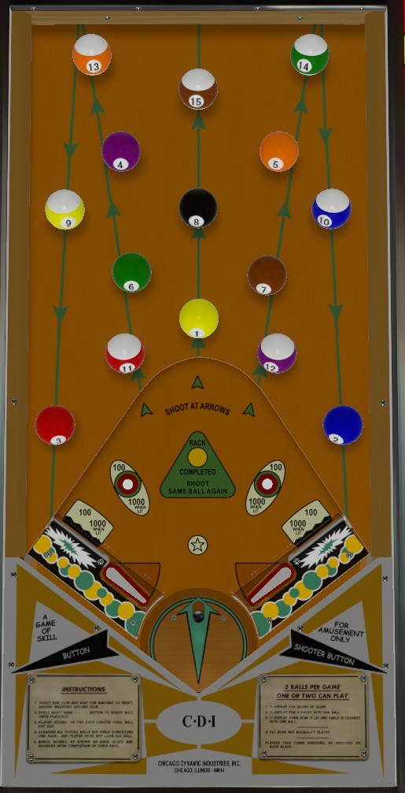

Hi-Score Pool does not have a conventional shooter lane of playfield. Rather, the ball is fired out of a cannon located between and below the flippers which rotates back and forth on its own. Press the right flipper button to launch the ball. The pinball is rarely visible on Hi-Score Pool; except when it is near the flippers, the ball travels beneath a wooden board with pool balls on it. To be able to track and control the ball, you'll either need to predict its movement underneath the pool ball board or use touch and sound cues to try to track its position. A ball ends when the pinball lands back into the rotating cannon between the flippers, which are quite wide apart.
If the pinball rolls directly under a lit pool ball, that pool ball will unlight and a pop noise is heard, but no points are scored. When the ball drains by landing in the cannon, you receive 100 points for each unlit pool ball on the board. If you unlight all 15 pool balls, the rack is considered completed. When a rack is completed, the flippers die and the ball is allowed to drain; you'll earn 1,500 points for knocking out all the pool balls, plus 1 added ball for completing the rack, plus the completed rack bonus shown on the backglass (4,000 on ball 1, 7,000 on ball 2, and 10,000 thereafter).
The rollover buttons and the wall switches behind the flipper hinges score 100 points, or 1,000 when lit. These features are only lit during the time in which the flippers are locked and the ball is allowed to drain after completing a rack. When the rollover buttons and wall switches are unlit, they intermittently cause the Star feature to be lit. Completing a rack while the Star is lit scores 1 replay. Replays can also be earned for reaching score thresholds or for completing multiple racks in one ball (default 3, and "in one ball" excludes the times where a rack is completed and the pinball is forced to drain).
Tilt ends the ball in play only, and forfeits whatever points would have been scored the next time the pinball landed in the launch cannon. There is usually a maximum of 5 added balls remaining at any one time, though some copies of Hi-Score Pool are known to have their extra ball units completely removed.
The below picture of Hi-Score Pool's playfield was taken from the VPX recreation by BorgDog.
